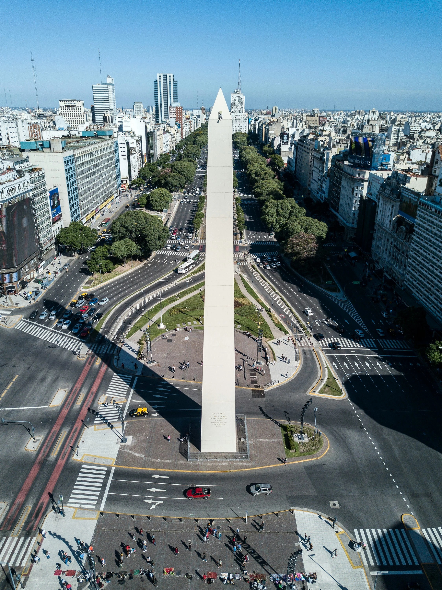
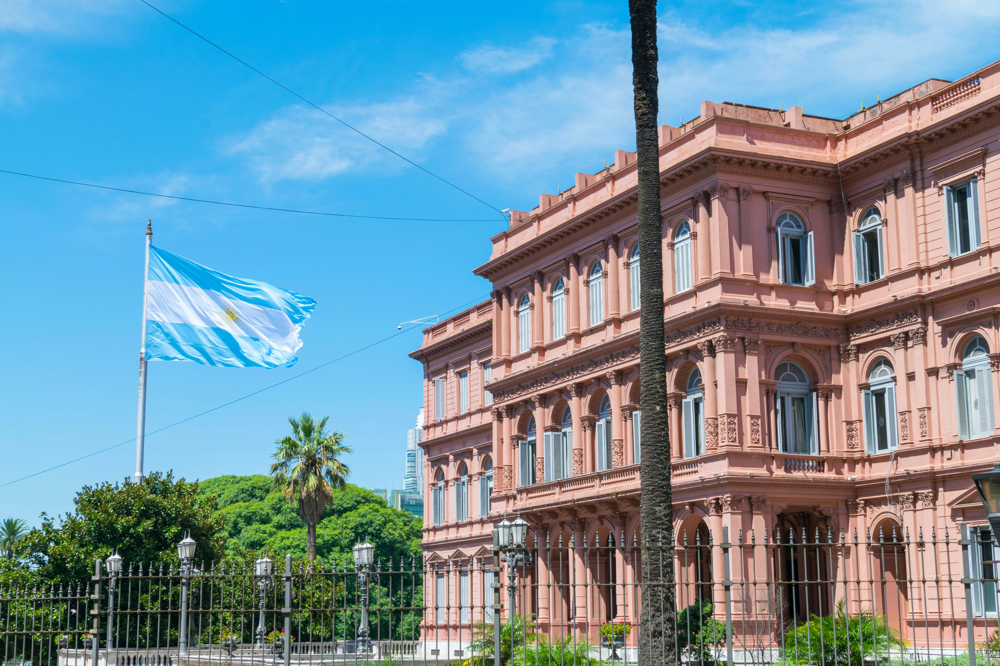
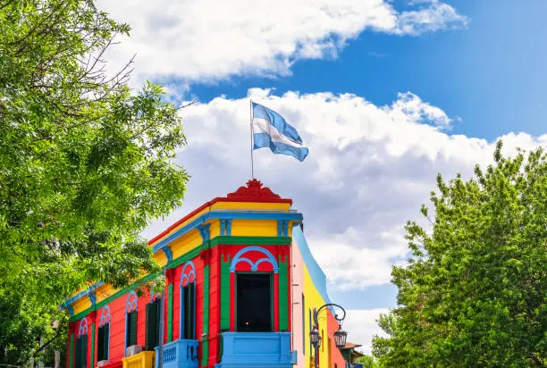
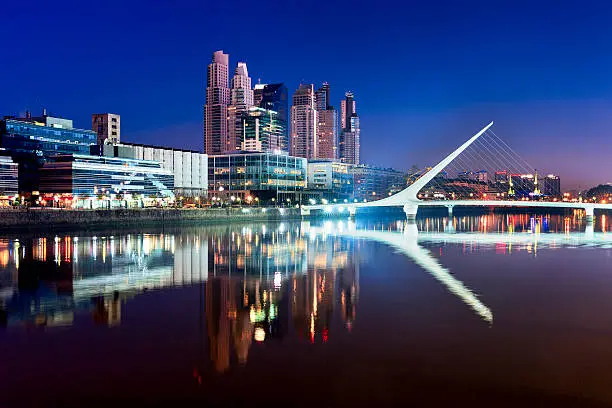

Obelisco
Um dos maiores símbolos de Buenos Aires, localizado na Avenida 9 de Julio.

Descubra uma das cidades mais encantadoras da América Latina, com cultura, gastronomia e história.
Explorar
Um dos maiores símbolos de Buenos Aires, localizado na Avenida 9 de Julio.

Rua famosa pelas casas coloridas, tango e cultura argentina.

Bairro moderno com restaurantes, parques e vista para o Rio da Prata.